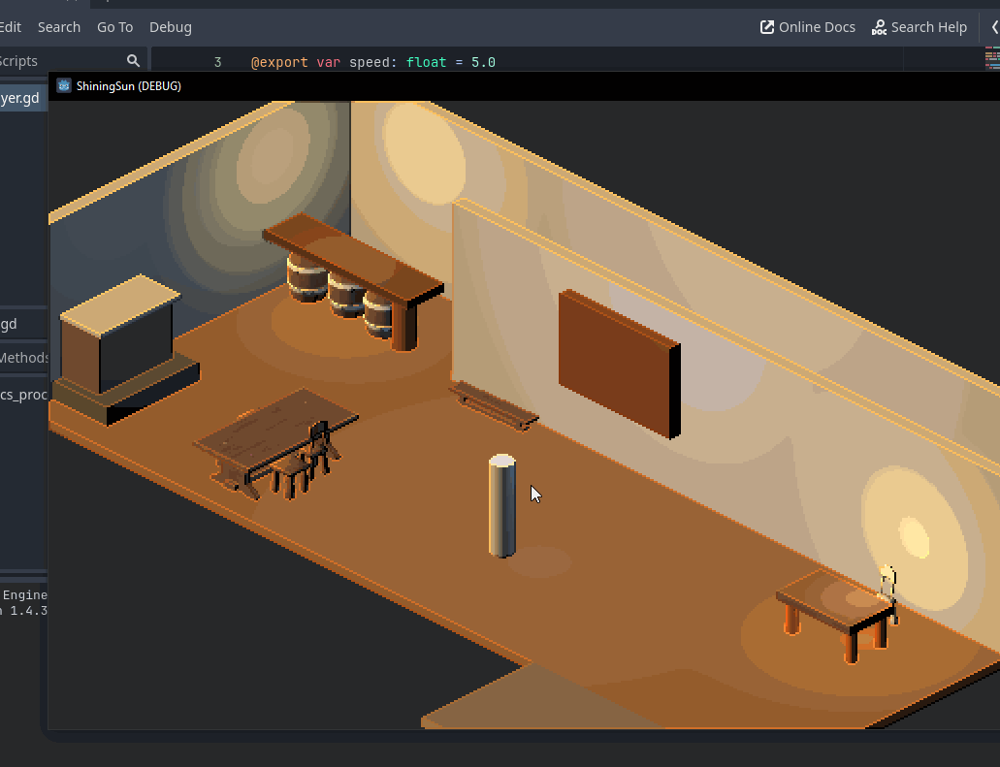

Godot: From 2D buggy ideas to Functional Isometric 3D scene !
I've been working on a side project for some sort of videogame.
I really went in blind and listened to GPT first, then Claude and eventually Gemini, because I ran out of credits with the others.
My first attempts where in 2D and failed a lot on GPT. I eventually switched to Claude and found more success, but it was still a struggle.
I watched a couple of youtube tutorials to help me along the way.
After a few days of tinkering with Godot and AI, I finally managed to create a functional isometric 3D scene. The journey was filled with challenges, from dealing with buggy AI-generated code to understanding the intricacies of Godot's engine. But the end result was worth it!
Just keep going and asking questions untill you get it to work !
